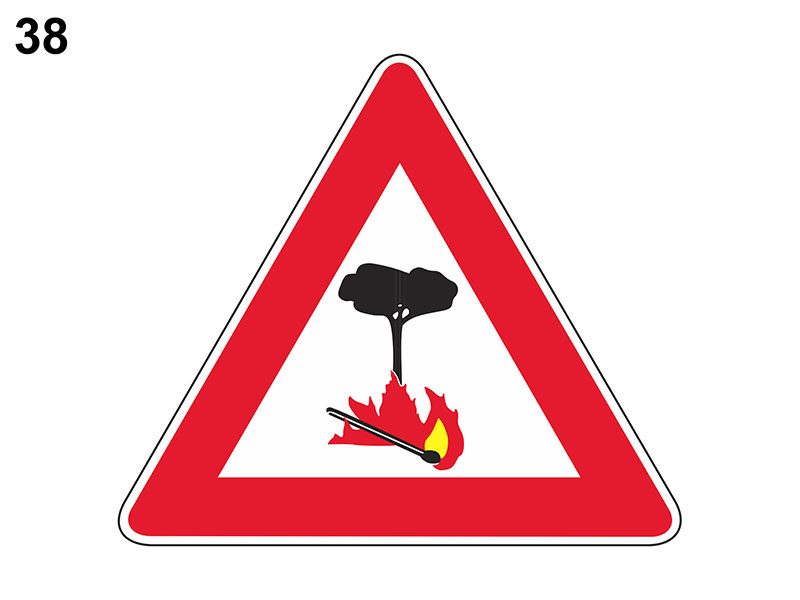

Pericolo di incendio

E' un segnale di pericolo che preannuncia (di norma a 150 metri) la vicinanza di zone laterali alla strada ad alto rischio d'incendio (ad esempio un bosco facilmente infiammabile).
E' obbligatoriamente integrato dal pannello ESTESA che indica la lunghezza del tratto di strada interessato.
Se il conducente o gli eventuali passeggeri non rispettano il divieto di gettare sigarette accese dal finestrino, può verificarsi un incendio.
E' opportuno non fermarsi sulla sterpaglia con veicolo munito di marmitta catalitica (in quanto la marmitta catalitica raggiunge elevate temperature).
Non è vero che vieta il transito ai veicoli che trasportano esplosivi o prodotti facilmente infiammabili.
E' obbligatoriamente integrato dal pannello ESTESA che indica la lunghezza del tratto di strada interessato.
Se il conducente o gli eventuali passeggeri non rispettano il divieto di gettare sigarette accese dal finestrino, può verificarsi un incendio.
E' opportuno non fermarsi sulla sterpaglia con veicolo munito di marmitta catalitica (in quanto la marmitta catalitica raggiunge elevate temperature).
Non è vero che vieta il transito ai veicoli che trasportano esplosivi o prodotti facilmente infiammabili.